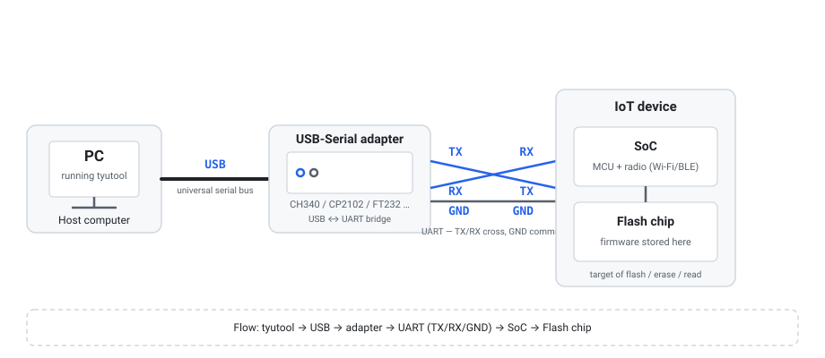

基础概念
在动手点击按钮之前，先花几分钟读懂这套词汇表——它能让你在后续每一页都看得明白。本页只讲概念，不涉及具体操作。
tyutool 通过一条串口链路与设备通信：电脑上的 tyutool 发出的指令，经由 USB 转串口适配器，以 UART 电信号的形式送达设备里的 SoC，最终读写那颗 flash 芯片。下图展示了这条链路的完整拓扑。

什么是固件
固件（firmware）就是存放在设备 flash 芯片里的程序——它决定设备开机后做什么、如何连网、能提供哪些功能。你可以把它理解为设备的“操作系统 + 应用程序”合在一起的一块二进制数据。
你之所以要替换固件，通常是为了以下几种目的：
- 升级：刷入厂商或社区提供的更新版本，获得新功能或修复缺陷。
- 修复：设备变砖、启动异常时，用一份已知完好的固件把设备救回来。
- 定制：刷入自定义或第三方固件（如改造后的固件），改变设备行为。
固件本质上就是一段字节数据，烧录的过程就是把这些字节原样写进 flash 芯片的过程。
什么是烧录 / 刷写
烧录（flashing，也叫刷写）就是把固件字节写入设备 flash 芯片的动作。打个比方：这就像把一个文件从你的电脑“复制”到设备的永久存储里。区别在于，这里用的不是网线或 U 盘，而是一条串口链路。
整条链路是这样传递数据的：
- tyutool 读取你电脑上的固件文件，把它切成一段段数据块。
- 数据块经 USB 送到 USB 转串口适配器，转换成 UART 电信号。
- UART 信号（TX/RX/GND）送到设备 SoC，SoC 再把数据写进 flash 芯片。
烧录完成后，设备下一次上电就会运行新写入的固件。
擦除 Erase
擦除（erase）是把 flash 某些区域的存储单元清空为空白状态（全 0xFF）的动作。flash 芯片的物理特性决定了“写入只能把 1 变成 0”，所以写入新数据前通常需要先擦除。
常见的使用场景：
- 写入前清场：清除旧数据/旧授权，确保新固件干净落地。
- 整片擦除：把 flash 全部清空，常用于设备归零或换固件前的彻底清理。
tyutool 提供了几种整片擦除预设（erase preset），按擦除范围由窄到宽排列：
| 擦除预设 | 含义 |
|---|---|
authInfo | 只擦除授权信息区（UUID/AuthKey），保留固件与其他数据。 |
fullChipNoRf | 整片擦除，但保留射频校准区（RF cal），避免设备无法连网。 |
fullChip | 整片完全擦除，所有区域一律清空（含射频校准）。 |
fullChipNoRf 是最常用的“安全彻底擦除”：清空固件但保留射频校准，避免设备刷完连不上网。
读取 Read
读取（read）是烧录的逆操作：把 flash 芯片里的内容复制出来，保存成你电脑上的一个文件。这个文件通常叫做“备份”或“dump”。
读取最大的用途是备份：在动手烧录或擦除之前，先把设备当前的 flash 内容完整读出来存好。万一后续操作出了问题，你可以用这份备份把设备恢复原状。
- 整片读取：把 flash 全部内容读成一个文件，最稳妥的备份方式。
- 分段读取：只读取某个地址段（segment），用于查看特定区域内容。
授权 Authorize（TuyaOpen UART auth）
授权（authorize）是写入设备凭据的动作，让设备能够连接涂鸦云。这套凭据由两部分组成：
- UUID：设备的唯一标识符。
- AuthKey：与 UUID 配对的认证密钥。
授权与烧录固件是两件独立的事：固件是程序，授权是身份凭证。一台设备可以装着最新固件却因为没有授权而连不上云，也可以有合法授权却跑着旧固件。两者互不替代。
tyutool 区分两种授权操作：
- 授权读取（auth-read）：只读取设备当前的 UUID/AuthKey，不写入任何内容，用于核对或排查。
- 授权写入（auth-write）：把你提供的 UUID/AuthKey 写入设备，完成授权。
串口 / UART / 波特率
串口（serial port）是一种“一次传一位”的通信接口。电脑本身通常没有原生串口，所以要用一个 USB 转串口适配器（USB-serial adapter），把 USB 信号转换成设备能识别的 UART 信号。常见适配器芯片有 CH340、CP2102、FT232 等。
UART（通用异步收发传输器）是串口在设备端的具体形式，最常用的三根线是：
- TX：发送端，把数据送出去。
- RX：接收端，收对方发来的数据。
- GND：地线，双方共地才能正确判断电平。
接线时必须交叉：电脑端的 TX 接设备端的 RX，反之亦然（见上方图 1）。
波特率（baud rate）是串口通信的速率，单位是 bit/秒。通信双方的波特率必须一致，否则收到的全是乱码。tyutool 支持多种波特率，常见的有以下几种：
| 波特率 | 典型用途 |
|---|---|
115200 | 最通用、最稳定的默认速率，几乎所有芯片都支持。 |
460800 | 较快，适合中等容量固件，稳定性仍较好。 |
921600 | 高速，大固件烧录时显著节省时间，但需芯片与线材支持。 |
115200 开始最稳妥；如果稳定且需要提速，再逐步尝试更高的波特率。遇到烧录失败、校验错误时，优先降回低波特率排查。
芯片型号
烧录前必须在 tyutool 里选择正确的芯片型号。这一步很关键，因为芯片型号决定了三件事：
- 通信协议：不同芯片进入烧录模式的方式、握手命令各不相同。
- 波特率：某些芯片只支持特定速率或上限。
- Flash 容量：芯片型号决定了可寻址的 flash 大小，影响读取/擦除的范围。
选错芯片轻则烧录失败，重则可能写坏数据。tyutool 支持的完整芯片列表，请见固件烧录页与命令行页。
TY 工具术语表
下表汇总本指南中出现的高频术语，方便随时回查。其他页面在首次提到某个术语时，也会链接到本表。
| 术语 | 含义 |
|---|---|
| Flash | 设备上存放固件的非易失性存储芯片；也指对它进行读/写/擦的操作总称。 |
| Erase | 擦除，把 flash 指定区域清空为 0xFF。 |
| Read | 读取，把 flash 内容复制到电脑文件（备份/dump）。 |
| Authorize | 授权，写入 UUID + AuthKey 让设备可连涂鸦云。 |
| UUID | 设备唯一标识符，授权时与 AuthKey 配对使用。 |
| AuthKey | 认证密钥，与 UUID 一起构成设备上云凭据。 |
| Baud | 波特率，串口通信速率（bit/秒），双方必须一致。 |
| UART | 通用异步收发传输器，设备端串口的具体形式（TX/RX/GND）。 |
| Segment | 段，flash 的一个地址区间，可单独读取或烧录。 |
| Erase preset | 擦除预设，按范围预定义的擦除方案：authInfo / fullChipNoRf / fullChip。 |
| MAC | 媒体访问控制地址，设备的网络硬件标识，部分芯片烧录时也会写入。 |